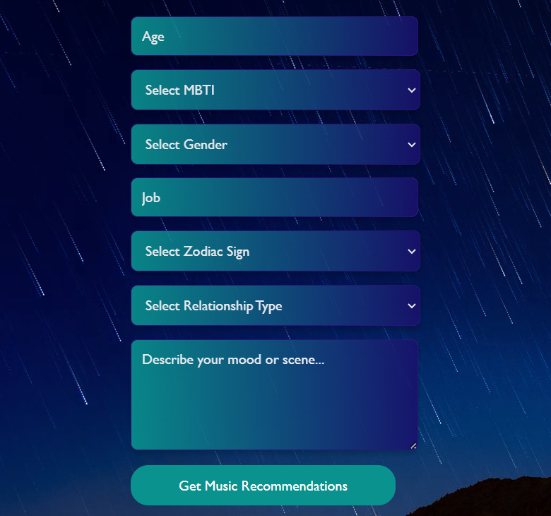

EDUCATION2022 — 2026

National University
of Singapore
Bachelor of Computing in Computer Science
Second Major in Mathematics
NUS Science and Technology Scholar
BASED IN SINGAPORE
Business Manager at Singtel
I support the Group CIO/CDO and Group CTO on technology strategy, AI transformation, and governance.
Before moving into strategy, I worked on model evaluation, AI retrieval, and enterprise software. That experience shapes how I approach business questions about technology.
I’m interested in the practical details behind adoption: what a system can do, who is responsible for it, and what people need to use it well.
Bachelor of Computing in Computer Science
Second Major in Mathematics
EARLIER INTERNSHIPS
Proposed lifecycle · Group standards, local accountability
ENTERPRISE AI STRATEGY & GOVERNANCE
Strategy and operating-model work for sharing AI assets across Singtel and its operating companies.
Solution Review Board / Architecture Review Board
PROCESS STRATEGY & ENABLEMENT
Communication and enablement work to help teams understand when and how to engage with architecture reviews.
EDUCATION TECHNOLOGY · TEAM PROJECT
A teacher–parent platform for learning records, AI-assisted reports, and human review.
APPLIED AI · MULTIMODAL RAG
A research prototype combining visual understanding with document and knowledge-graph retrieval.
A quiz with hints, feedback, and rewards.
AI AWARENESS · TEAM PROTOTYPE
Image, audio, and video challenges that help people recognise deepfake risks.

Original project interface
AI CHALLENGE · FRONTEND CONTRIBUTION
A team-built music-discovery prototype combining AI recommendations with Spotify.
For opportunities or a conversation about my work, email me or connect on LinkedIn.
zhouxuyan6@gmail.com